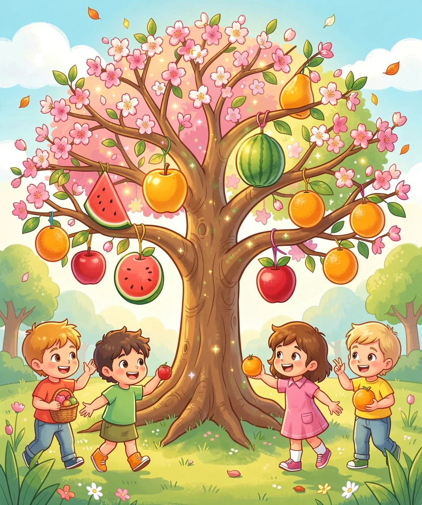
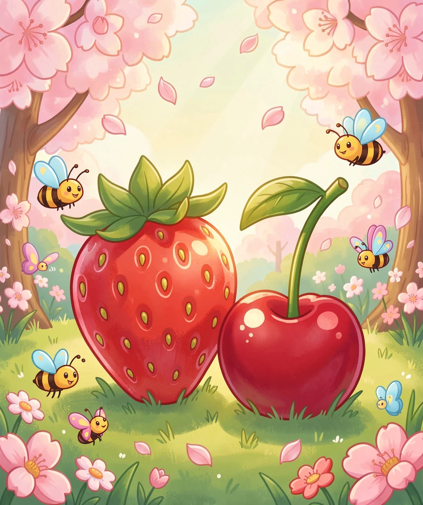
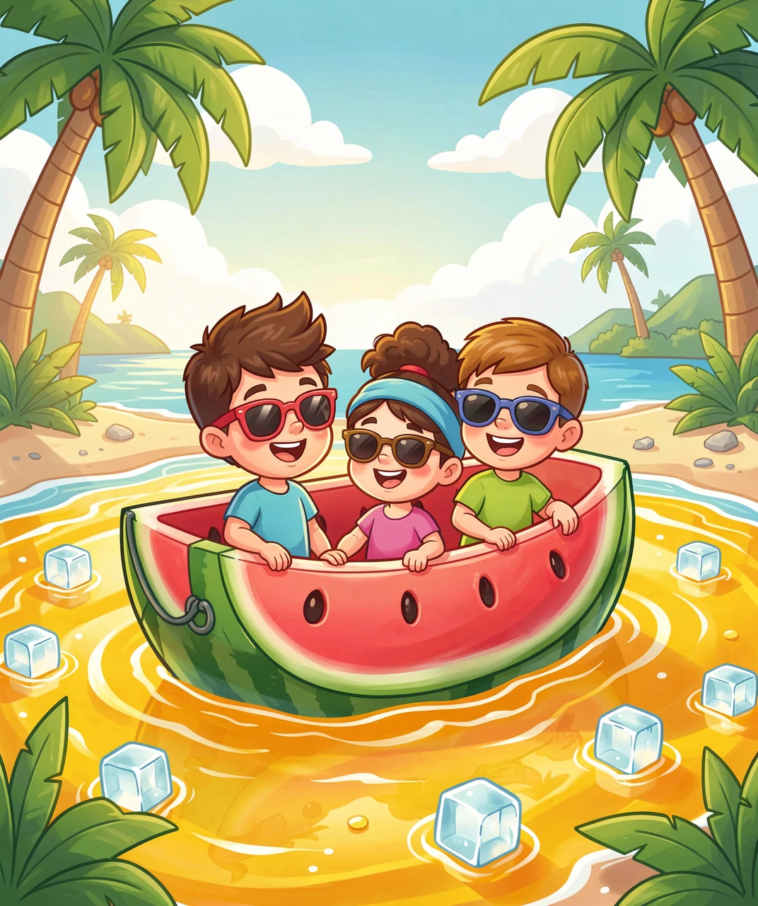
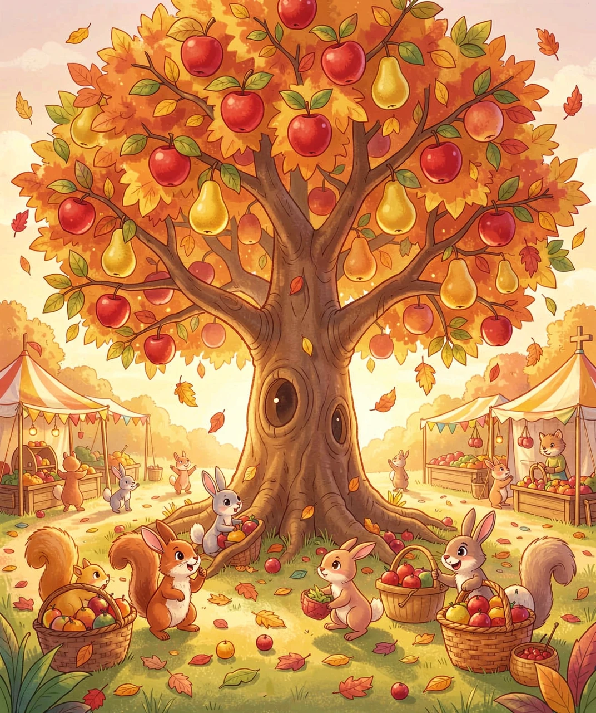
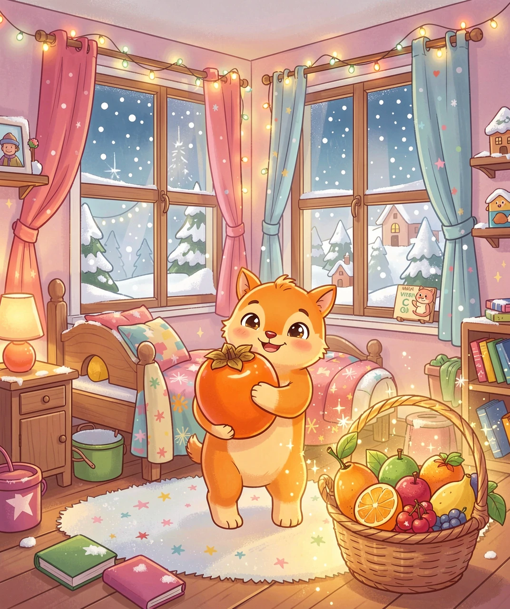

打开你的味蕾雷达——我们要穿越春夏秋冬，寻找每个季节最美味的水果秘密！

春天来了，大地从冬眠中醒来。最先出来"报到"的水果是谁呢？
草莓不是真正的"果实"！你吃的那红色部分是花托（花的下半部分）膨胀变来的。草莓表面那些小小的"芝麻粒"才是它真正的果实，每个小粒里面都藏着一颗种子！
樱桃树在春天开花，粉白色小花像雪花飘落。花谢后一个月，绿绿的小樱桃就开始变红。樱桃的果柄（那个小把子）越长，说明越新鲜哦！

太阳像个大火球挂在天上，这时候你需要——夏季水果特工队！
西瓜是世界上含水量最高的水果之一，比你的身体含水量还高！古人叫它"寒瓜"，因为它能清热解暑。怎么挑甜西瓜？记住口诀：一看纹路清、二拍声音脆、三看肚脐小。
芒果原产印度，有4000多年种植史。一个芒果含有你一天所需维生素C的60%。印度人把芒果视为"圣果"，婚礼上要用芒果叶装饰门楣，象征幸福和繁荣。

秋天是水果们的"年度大会"，各种果子挤满了果篮！
这句西方谚语不是胡说的：苹果富含果胶（一种可溶性纤维），能帮肠道做"大扫除"。苹果皮里的花青素（让皮变红的物质）是天然的抗氧化剂。吃苹果别削皮，营养翻倍！
咬一口脆梨，咔嚓咔嚓像在嘴里开演唱会。梨的水分比西瓜少一点点，但甜度更高。中医说梨能润肺止咳，冬天煮一碗冰糖雪梨，嗓子立刻舒服了～

北风呼呼吹，冬天的水果虽然种类少，但个个都是维生素炸弹！
橘子、橙子、柚子、柠檬……它们都是一家人！柑橘家族有一个超能力——杂交。柚子和橘子杂交生出了橙子，橙子和柚子回交生出了葡萄柚。它们之间的关系比电视剧还复杂！
熟透的柿子像一个个小灯笼挂在光秃秃的枝头。柿子含糖量高达18%，是水果界的"甜蜜担当"。但记住——千万别空腹吃，也不要和螃蟹一起吃，容易肚子不舒服。
| 季节 | 代表水果 | 超能力 |
|---|---|---|
| 🌸 春 | 草莓、樱桃 | 唤醒身体 |
| ☀️ 夏 | 西瓜、芒果 | 补水降温 |
| 🍂 秋 | 苹果、梨 | 润肺养胃 |
| ❄️ 冬 | 柑橘、柿子 | 维C护盾 |

现在你已经认识了每个季节的"水果明星"。大自然就像一个永远不会关门的水果自助餐厅，每个季节都为你准备好了不同的美味。
应季水果是在自然条件下成熟的，阳光、温度、水分都刚刚好，所以糖分积累得更充分。反季水果往往在大棚里提前摘、靠人工手段催熟——能吃，但味道差远了，还更贵！
下次去超市或菜场，试试当一回水果侦探：
🔍 看看摊子上最多的是什么？
🔍 摸一摸、闻一闻，哪个闻着最香？
🔍 问问老板："这是当季的吗？哪里产的？"
记住：当地、当季、自然熟——这是挑选最棒水果的三大秘诀！
答完5题，你就是水果小达人👇
1. 草莓我们吃的红色部分是它的什么？
A) 果实 B) 花托 C) 叶子 D) 根
✅ B) 花托！表面那些小芝麻粒才是真果实
2. 哪种水果含水量最高？
A) 苹果 B) 香蕉 C) 西瓜 D) 梨
✅ C) 西瓜！92%都是水，天然"水壶"
3. 橙子的"父母"是谁？
A) 苹果+梨 B) 柚子+橘子 C) 柠檬+芒果 D) 西瓜+草莓
✅ B) 柚子+橘子！柑橘家族的关系比电视剧还复杂
4. 选水果的三大秘诀是什么？
A) 贵的、进口的、包装好的 B) 当地、当季、自然熟 C) 越大越好、越红越好 D) 随便拿
✅ B) 当地、当季、自然熟！这是水果三宝
5. 全世界大约有多少种苹果？
A) 100种 B) 500种 C) 3000种 D) 7500种
✅ D) 7500多种！每天吃一种要花20年